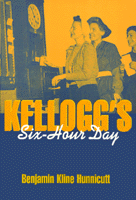

<body bgcolor="#FFFFFF" text="#000000" link="#0000FF" vlink="#CC0000" alink="#CC0000"><center><hr width="350" size="1" align="center" noshade>In an era of corporate downsizing and threats of a "jobless future," this book is a wake-up call to recover the vision of life beyond necessity that allows workers time to invest in family, community, and a democratic future<hr width="350" size="1" align="center" noshade><p><a href="https://cdcshoppingcart.uchicago.edu/Cart/ChicagoBook.aspx?ISBN=9781566394475&&PRESS=temple" target="_top">Buy this book!</a> | <a href="https://cdcshoppingcart.uchicago.edu/Cart/Cart.aspx?PRESS=temple" target="_top">View Cart</a> | <a href="https://cdcshoppingcart.uchicago.edu/Cart/Cart.aspx?PRESS=temple" target="_top">Check Out</a></p><p></p></center><!--none//--><h1>Kellogg's Six-Hour Day</h1>
<h3>Benjamin Kline Hunnicutt</h3>
<P>cloth 1-56639-447-3 $69.95, Nov 96, <FONT COLOR=#990033>Out of Stock Unavailable</FONT>
<br>paper 1-56639-448-1 $38.95, Oct 96, <FONT COLOR=#990033>Available</FONT>
<BR> 288 pp
6x9
1&nbsp;table
</P><BLOCKQUOTE><I>"Do we live to work or work to live? The question of how important work is in our lives is central to Hunnicutt's study of Kellogg's daring social experiment, which began in 1930 and lasted until 1985.... [I]t could serve as a wake up call for a nation in big trouble if the jobless future comes to pass."</I>
<br>&#151<b><I>Publishers Weekly</I></b><I></I></BLOCKQUOTE>
<p>On December 1, 1930, at the start of the Great Depression, W.K. Kellogg replaced the traditional three daily eight-hour shifts in his cereal plant with four six-hour shifts. By adding on a new shift he and his managers created jobs for employees that the company had laid off and for other unemployed persons in Battle Creek, Michigan.
<p>Kellogg's six-hour day was the pinnacle of a hundred-year process that cut working time virtually in half. Kellogg Management, propelled by a vision of Liberation Capitalism, insisted that six hours would revolutionize society by shifting the balance of time from work to leisure--from economic concerns to the challenge of freedom.
<p>Kellogg's employees, like centuries of workers, believed that work was a means to an end. An overwhelming number of employees were willing to "share their work" and found the extra time an opportunity to invest in the family, community, church, and individual freedom. When World War II ended, Kellogg's managers abandoned the six-hour shift and began with the rest of the nation to define progress as more work for more people. Losing sight of the original dream of more time to live outside necessity, management argued that work should remain the center of life, providing identity, meaning, and purpose to an otherwise meaningless existence.
<p>Hunnicutt documents the struggle of those workers, mostly women, who resisted management and the new beliefs about work's centrality. They fought to keep their six-hour shifts until 1985, and in the process preserved the century-old vision of "progressive shortening of the hours of labor." Their story is a monument to workers' struggle for control over their lives and for substantial freedom beyond necessity. It serves as a reminder of a remarkable vision of progress, offering hope and guidance to the last decade of this century when layoffs, downsizing, mandatory overtime, and a "jobless future" plague the nation.
<BR>&nbsp;<h2>Excerpt</h2><P>Excerpt available at <a href="http://www.temple.edu/tempress">www.temple.edu/tempress</a></p>
<BR>&nbsp;<h2>Reviews</h2>
<p><I>"This valuable case study should speed a rethinking of the glorification of paid labor."</I>
<br>&#151<b><I>New York Times Book Review</I></b>
<p><i>"...very thought provoking.... this is an important book to be recommended to anyone interested in the debate over the length of the work week.</i>
<br>&#151<b>H-Net</b>
<p><i>"Hunnicutt marshals numerous printed sources and hundreds of interviews with retired and current Kellogg's workers in order to build his story and provide it with plentiful human faces. This book is a useful and readable contribution to the fields of leisure studies and labor history, and spins a potent tale for labor economists to consider as well."</i>
<br>&#151<b><i>The Journal of Economic History</i></b>
<p><i>"Hunnicutt chronicles the fascinating Kellogg experiment from 1930 to the final abolition of the six-hour day in 1984.... [Former Kellogg employees'] accounts of their experiences provide compelling support for the shorter workday as a strategy to create jobs, increase productivity, and encourage satisfying avocations and community interests."</i>
<br>&#151<b><i>The Journal of American History</i></b>
<p><i>"...offers substantial insight into the dilemmas of work time in U.S. society.... the book is provocative and highly relevant to today's 'contingent' labor markets."</i>
<br>&#151<b><i>Contemporary Sociology</i></b>
<p><i>"...this book is an important contribution to the interdisciplinary literature on working time. Further, because it addresses fundamental issues about the scope and purpose of economic activity, the nature of economic growth, and the premises of conventional models of the labor market, this book should be of interest to economists in a number of fields. Social economists will especially appreciate the author's attention to the interaction between cultural values and economic institutions."</i>
<br>&#151<b><i>Review of Social Economy</i></b>
<BR>&nbsp;<h2>Contents</h2><P>
<p>Acknowledgments
<br>Introduction
<br>1. Kellogg's Liberation Capitalism
<br>2. The Struggle about Time
<br>3. Seize the Day: Leisure in Battle Creek
<br>4. Erosion of the Six-Hour Coalition: Unionization and Division
<br>5. After the War: The Rise of the Eight-Hour Coalition
<br>6. Human Relations Management: Reaffirming Work as Life's Center
<br>7. Kellogg Workers Embrace the New Work Rhetoric
<br>8. The Six-Hour Mavericks
<br>9. The Death of Six-Hours
<br>Notes
<br>Index
</P><BR>&nbsp;<H2>About the Author(s)</H2>
<table><tr><td valign="top"><img src="/tempress/authors/1155_au.gif" height="90" width="75"></td><td width="100%" valign="middle"><p><B>Benjamin Kline Hunnicutt</B> is Professor of Leisure Studies at the University of Iowa. He is also the author of <I><a href="460_reg.html" target="_top">Work Without End: Abandoning Shorter Hours for the Right to Work</a></I> (Temple).</P></td></tr></table>
<BR><H2>Subject Categories</H2>
<p><A HREF="/tempress/history.html" TARGET="_top">History</a>
<BR><A HREF="/tempress/labor.html" TARGET="_top">Labor Studies and Work</a>
</p>
<BR><h2 class="inpageheading">In the series</H2>
<P><I><a href="http://www.temple.edu/tempress/labor_change.html" onMouseOver="window.status='Click for other books in this series!'; return true;" onMouseOut="window.status=''; return true;" target="_top">Labor and Social Change</a></i>, edited by Paula Rayman and Carmen Sirianni.
</p><p><i>Labor and Social Change</i>, edited by Paula Rayman and Carmen Sirianni, includes books on workplace issues like worker participation, quality of work life, shorter hours, technological change, and productivity, as well as union and community organizing and ethnographies of particular occupations.</p>
<p align="center"><a href="https://cdcshoppingcart.uchicago.edu/Cart/ChicagoBook.aspx?ISBN=9781566394475&&PRESS=temple" target="_top">Buy this book!</a> | <a href="https://cdcshoppingcart.uchicago.edu/Cart/Cart.aspx?PRESS=temple" target="_top">View Cart</a> | <a href="https://cdcshoppingcart.uchicago.edu/Cart/Cart.aspx?PRESS=temple" target="_top">Check Out</a></p><p><font face="Arial" size="1"><a href="copyright.html" onMouseOver="window.status='Web Copyright Policy';return true;" onMouseOut="window.status=''" title="Web Copyright Policy">&copy;</a> 2015 <a href="http://www.temple.edu" target="new" onMouseOver="window.status='Link to Temple University home page';return true;" onMouseOut="window.status=''" title="Link to Temple University home page">Temple University</a>. All Rights Reserved. http://www.temple.edu/tempress/titles/1155_reg.html</font></p>